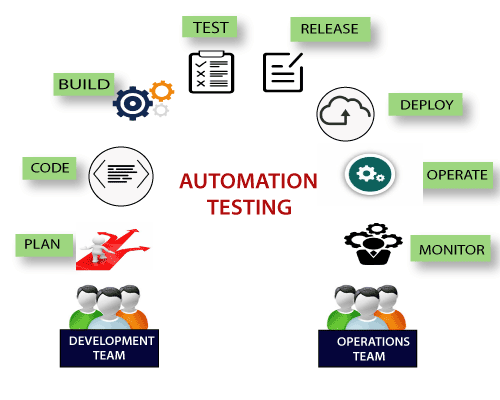

Selenium Interview Questions
Selenium is based on automating web applications for testing purpose, but it is certainly not limited to just that. The web-based administration tasks can be automated as well. It automates browsers
Selenium has the support of some of the leading browser vendors who have adopted it to make Selenium an essential part of their browser. It is also the core technology in many other browser automation tools, APIs, and frameworks.
A list of most frequently asked Selenium interview questions, and their answers are given below.
Basic Level - Selenium Interview Questions
1) What is test automation or automation testing?
Automation testing uses automation tools to write and execute test cases, no manual involvement is necessary for executing an automated test suite. Testers prefer automation tools to write test scripts and test cases and then group into test suites.
Automation testing enables the use of specialized tools to automate the execution of manually designed test cases without any human intervention. Automation testing tools can access the test data, controls the execution of tests and compares the actual result against the expected result. Consequently, generating detailed test reports of the system under test.

2) What are the advantages of automation testing?
Some basic Advantages of automation testing are as follows.
@=Automation testing supports both functional and performance test on an application.
-It supports the execution of repeated test cases.
-It facilitates parallel execution.
-It aids in testing a large test matrix.
-It improves accuracy because there are no chances of human errors.
-It saves time and money.
3) Name some of the commonly used Automation Testing tools that are used for Functional Automation.
@-Lists of top 10 used automation testing tools for Functional Automation are as follows.
1-Teleric Test Studio, Developed by Teleric.
2-TestingWhiz
3-HPE Unified Functional Testing (HP - UFT formerly QTP)
4-Tosca Testsuite
5-Watir
6-Quick Test Professional, provided by HP.
7-Rational Robot, provided by IBM.
8-Coded UI, provided by Microsoft.
9-Selenium, open source.
10-Auto It, Open Source.
4) Name some of the commonly used Automation Testing tools that are used for Non-Functional Automation.
@-Lists of some commonly used Automation Testing tools for Non-Functional Automation are as follows.
1-Load Runner, provided by Hp.
2-JMeter, provided by Apache.
3-Burp Suite, provided by PortSwigger.
4-Acunetix, provided by Acunetix.
5) What is Selenium?
Selenium is a portable framework for software testing. Selenium tool facilitates with a playback tool for authoring functional tests without the need to learn a test scripting language.
Selenium is one of the most widely used open source Web UI (User Interface) automation testing suite. Jason Huggins developed Selenium in 2004 as an internal tool at Thought Works. Selenium supports automation across different browsers, platforms, and programming languages.
6) What are the different components of Selenium?
@-Selenium is not just a single tool but a suite of software's, each having a different approach to support automation testing. It comprises of four major components which include:
1-Selenium Integrated Development Environment (IDE)
2-Selenium Remote Control (Now Deprecated)
3-WebDriver
4-Selenium Grid
7) List out the names of programming languages, browsers and operating systems that are supported by Selenium.
@-Selenium supports various operating systems, browsers and programming languages. Following is the list:1-Programming Languages: C#, Java, Python, PHP, Ruby, Perl, JavaScript.
2-Operating Systems: Android, iOS, Windows, Linux, Mac, Solaris.
3-Browsers: Google Chrome, Mozilla Firefox, Internet Explorer, Edge, Opera, Safari, etc.
8) What are the significant changes/upgrades in various Selenium versions?
@-Selenium v1.0:Version 1.0 was the initial release of Selenium. It included three tools: Selenium IDE, Selenium RC, and Selenium Grid.
@-Selenium v2.0:Selenium WebDriver was introduced replacing Selenium RC in version "2.0". With the onset of WebDriver, RC got deprecated and moved to the legacy package.
@-Selenium v3:The latest release Selenium 3 has new added features and functionalities. It includes Selenium IDE, Selenium WebDriver, and Selenium Grid.
9) List some of the test types that are supported by Selenium.
@-Different types of testing's that we can achieve through Selenium are. 1-Functional Testing 2-Regression Testing 3-Sanity Testing 4-Smoke Testing 5-Responsive Testing 6-Cross Browser Testing 7-UI testing (black box) 8-Integration Testing
10) What is Selenium IDE?
Selenium IDE is implemented as Firefox extension which provides record and playback functionality on test scripts. It allows testers to export recorded scripts in many languages like HTML, Java, Ruby, RSpec, Python, C#, JUnit and TestNG.
Selenium IDE has limited scope, and the generated test scripts are not very robust, and portable.
11) What do you mean by Selenese?
Selenium commands, also known as "Selenese" are the set of commands used in Selenium that run your tests. For example, command - open (URL); launches the desired URL in the specified browser and it accept both relative and absolute URLs. A sequence of Selenium commands (Selenese) together is known as a test script.
12) What are the different ways of locating a web element in Selenium?
In Selenium, web elements are identified and located with the help of Locators. Locators specify a target location which uniquely defines the web element in the context of a web application.
@-Thus, to identify web elements accurately and precisely we have different types of locators in Selenium:1-ID
2-ClassName
3-Name
4-TagName
5-LinkText
6-PartialLinkText
7-Xpath
8-CSS Selector
9-DOM
13) How many types of WebDriver API's are available in Selenium?
@-The list of WebDriver API's which are used to automate browser include:1-AndroidDriver
2-ChromeDriver
3-EventFiringWebDriver
4-FirefoxDriver
5-HtmlUnitDriver
6-InternetExplorerDriver
7-iPhoneDriver
8-iPhoneSimulatorDriver
9-RemoteWebDriver
14) List out some of the Automation tools which could be integrated with Selenium to achieve continuous testing.
@-Selenium can be used to automate functional tests and can be integrated with automation test tools such as Maven, Jenkins, &Docker to achieve continuous testing. It can also be integrated with tools such as TestNG, &JUnit for managing test cases and generating reports.15) What do you mean by the assertion in Selenium?
@-The assertion is used as a verification point. It verifies that the state of the application conforms to what is expected. The types of assertion are "assert", "verify" and "waitFor".16) Explain the difference between assert and verify commands?
Assert: Assert command checks if the given condition is true or false. If the condition is true, the program control will execute the next phase of testing, and if the condition is false, execution will stop, and nothing will be executed.
Verify: Verify command also checks if the given condition is true or false. It doesn't halt program execution, i.e., any failure during verification would not stop the execution, and all the test phases would be executed.
17) What do you mean by XPath?
XPath is also defined as XML Path. It is a language used to query XML documents. It is an important approach to locate elements in Selenium. XPath consists of a path expression along with some conditions. Here, we can easily write XPath script/query to locate any element in the webpage. It is developed to allow the navigation of XML documents. The key factors that it considered while navigating are selecting individual elements, attributes, or some other part of an XML document for specific processing. It also produces reliable locators. Some other points about XPath are as follows.
@-XPath is a language used for locating nodes in XML documents. @-XPath can be used as a substitute when you don't have a suitable id or name attribute for the element you want to locate. @-XPath provides locating strategies like: @-XPath Absolute @-XPath Attributes18) Explain XPath Absolute and XPath attributes.
@-XPath Absolute:XPath Absolute enables users to mention the complete XPath location from the root HTML tag to the specific elements.
-Syntax: //html/body/tag1[index]/tag2[index]/.../tagN[index] -Example: //html/body/div[2]/div/div[2]/div/div/div/fieldset/form/div[1]/input[1] @-XPath Attributes:XPath Attributes is always recommended when you don't have a suitable id or name attribute for the element you want to locate.
-Syntax: //htmltag[@attribute1='value1' and @attribute2='value2'] -Example: //input[@id='passwd' and @placeholder='password']19) What is the difference between "/" and "//" in XPath?
-Single Slash "/": Single slash is used to create XPath with absolute path.-Double Slash "//": Double slash is used to create XPath with the relative path.
20) What are the different types of annotations which are used in Selenium?
@-JUnit annotations which can be used are: 1-Test2-Before
3-After
4-Ignore
5-BeforeClass
6-AfterClass
7-RunWith
21) What are the WebDriver supported Mobile Testing Drivers?
@-WebDriver supported "mobile testing drivers" are:
-AndroidDriver
-IphoneDriver
-OperaMobileDriver
22) What are the popular programming languages supported by Selenium WebDriver to write Test Cases?
@-elenium WebDriver supports the below languages to write Test Cases.1-JAVA
2-PHP
3-Python
4-C#
5-Ruby
6-Perl